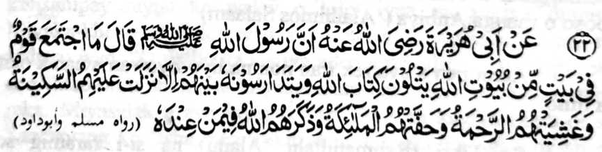
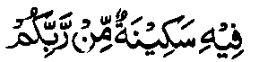
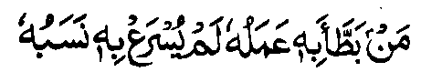

Hadith — 22

Miyakathitayan ko Abu Hurairah (Radhiallaho Anho) a mata-an a so Rasulollah (Sallallaho 'Alaihi Wasallam) na pitharo iyan, “Da ko kathimo-timo o manga tao si-i ko walay a ped ko manga walay o Allah a pembatiya-an niran non so kitab o Allah ago gi-i ran ipamagenda-owa a ba di tomoron kiran so Sakinah (kalilintad o mokarna) go mibongkos kiran so Rahmat go libeten siran o manga Mala-ikat go ipangandag siran o Allah ko [manga Mala-ikat a] lomilibeton. ”
Giyangka-iya a Hadith na iniropa niyan so makalalawan a kalbihan o manga gi-i paganadan ko Agama ago so manga Madrasah. So kaparoliya ko apiya anda sangkanan a miya-aloy a manga balas na tanto a maporo [a daradat] sa apiya so tenday o kaoyag-oyag o tao na langon niyan non misanggar na daden malapis. Ogaid na si-i na madakel a manga balas, balabao ron angkoto a miya-ori ma-aloy. So ka-aloy si-i sa Hadapan o Allah ago so kiyatademi [reketa] o Pekhababaya-an ta na okor a daden a lawan niyan.
So kathoron o Sakinah na miya-aloy ko madakel a Hadith. So manga Ulama sa Hadith na inosay ran sa madakel a okit so titho a kapiya niyan. So kiyapaka mbararm-mbarang o osayan na kena ba miyakazosopaka ka khapakay a baden makapagayon-ayon.
So Hadrat ‘Ali (Radhiallaho ‘Anho) na inosay niyan so Sakinah sa isa a mamot a ‘endo’, a aya paras iyan na lagid o paras o manosiya.
So Allamah Suddi (Rahmatullahi ‘Alaihi) na miyapanothol a miyatharo iyan a giyanan so ngaran o satiman a palanggana a bolawan si-i ko Sorga a ron phagonabi so manga poso o manga Anbiya (‘Alaihimos Salaam)
Aden pen a aya rek iran non na liyo-liyowan a nan a okit a limo.
So Tibri (Rahmatullahi ‘Alaihi) na si-i raramig so pamikiran niyan ko kepit a aya ma-ana niyan na kalilintad o poso. Aden a aya inipema-ana niyan non na gagao, aden pen a aya rek iyan non na bantogan, go aden pen a aya rek iran non na manga Mala-ikat. Madakel pen a osayan niyan mambo. So Hafiz na inisorat iyan ko [kitab a] Fath-ul-Bari’ a so Sakinah na langon niyan ma-ana angkanan a miyanga-aaloy. So pamikiran non o Nawawi (Rahmatullahi ‘Alaihi), nakiyazolbiya-an o kalilintad, limo, go so manga lagid iyan, a pethoron a ped o manga Mala-ikat. Aya kiya-aloya on sa Qur’an na kati-i:
...Na piyakatoron o Adah so Sakinah. Niyan si-i rekaniyan [a Nabi]... [Surah At-Taubah:40]
Seka-niyan [so Allah] a piyakataron Niyan so kathatakna ko manga poso o Miyamaratiyaya... [Surah Al-Fath:4]

...katatago-an sa Sakinah a pho-on ko Kadenan niyo.. [Surah Al-Baqarah:248]
Giyoto-i giyangka-iya mapiya a limo na inaloy ko madakel a Ayaat sa Qur’an, ago tanto a madakel a Hadith a kapapadaleman sa mapiya a tothol pantag si-i.
Miya-aloy ko [kitab a] Ihya a miyaka-isa na so Ibn-e-Thauban (Radhiallaho ‘Anho) na miyakiphasada ko isa ko manga tonganay niyan sa si-i kiran pethankas, ogaid na aya kinisampay niyan ko walay o lolot iyan na kagiya mapita. Miyaka-kheno so lolot iyan sangkoto a kiyatarasao niyan, na pitharo iyan, “O da bo ka kagiya aden a pasad ta na di aken reka den tharo-on o antona-ai miyakabalam-ban raken sa kazong aken reka. Miyasalak a aya kiyapakanao aken na kagiya mara-ot so Sambayang ko 'Isha. Miyapikir aken a imasaden ngko da-an so Sambayang aken a Witr (wajib a Sambayang a telo ka rak’at ko oriyan o 'Isha) ka amay-amay na ba ako den miyatay sangkoto a gagawi-i a da ko kazambayangi, sabap sa da-a kasarigan pantag ko diyandi o kapatay. Soden so kiya Qonot aken [liyo-liyowan a pangeni ko soled o Sambayang a Witr], na miya-ilay aken so manga gadong a sapadan ko Sorga, a langon non mapapadalem so pimbarang a obarobar. Miyabira-i ako ron baden taman ko kiya-sobo niyan.” Phipira gatos a lagida-i a miyanggola-ola si-i ko kiyapaginetao o manga barasimba a manga lokes tano. Giyangkanan a manga nganin, na aya bo a kapekhasagadi ron na amay ka mabelag so tao sa tarotop ko langon a nganin a salakao ko Allah, go so tarotop a inengka si-i Rekaniyan.
Sakamaoto mambo a madakel a Hadith a inaloy ran so miyanggola-ola a kaphelibet o manga Mala-ikat. Aden a masagogod a tothoian ko Usaid ibn-e-Hudhair (Radhiallaho ‘Anho) a miya-aloy ko manga kitab a Hadith. Miyapanothol a si-i ko kapembatiya iyan sa Qur’an, na miyagedam iyan a kiyabongkosan sekaniyan sa gabon. So Rasulollah (Sallallaho ‘Alaihi Wasallam) na pitharo iyan non a giyoto so manga Mala-ikat a mithimo ka phamamakinegen niran so kapembatiya-a ko Qur’an. Sabap ko kadakel iran na aya kiya-ilaya kiran na lagid o gabon.
Miyaka-isa na aden a Sahabi (Radhiallaho ‘Anho) a miyagedam iyan a kiyabongkosan sa gabon. Pitharo on o Rasulollah (Sallallaho ‘Alaihi Wasallam) a giyoto so Sakinah, a piyakitoron sabap ko kapembatiya iyan sa Qur’an.
Si-i ko [manga kitab a] Muslim Sharif, na giyangka-iya a Hadith na masagogod a kiya-aloya-on. Aya kiyaposan non na:

Sa tao a ma-awat sekaniyan o ‘amal iyan [a marata ko limo o Allah] na di sekaniyanon maphakarani [pharoman] o bangensa niyan.
Giyoto-i sabap a so tao a maporo-i bangensa, ogaid na gi-i nggalebek sa sopak ago dosa, na di niyan den matimbang sa Pangilalayan o Allah so tao a Muslim a mababa-i bangensa ago manga-ngalimbaba-an, ogaid na ma-aleken ko Allah ago barasimba.
..Mata-an! A aya pemamasela-an rekano si-i ko Allah na so mala rekano-i kalek paratiyaya [ko Allah] [Surah Al-Hujurat:13]